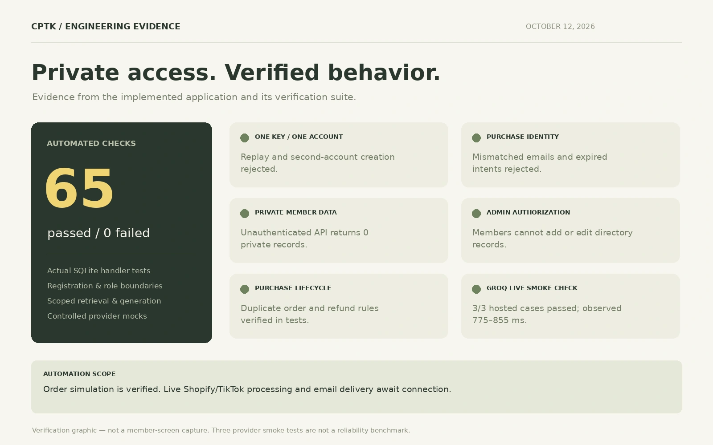

Discover the guide
I keep the public website focused on general promotional information about the book and companion.
Asjai Lou Casting / Company project
A physical casting guide holds valuable expertise and proprietary directory information. I extended it into a useful digital experience while keeping that information private.
I built the public website, authenticated member application, RAG chatbot, account-activation workflow, admin tools, and verification suite.
Company project · Private source code

01 / Product experience & account security
I keep the public website focused on general promotional information about the book and companion.
I give members access to their purchased directory, chatbot, saved references, and preparation tools.
I use a transaction and unique constraints because separate check-and-create steps can let repeated requests claim the same purchase. Key consumption and account creation must succeed together.
I validate the purchase key before allowing account creation.
I confirm that the identity matches the purchase email.
I consume the key and create the account in one database transaction.
I use unique constraints to reject key replay and second-account creation.
The consequence: a checked key cannot be reused to create another account, and proprietary records stay behind authenticated access.
02 / AI engineering & administration
I apply collection permissions during retrieval, before Groq generates an answer. I enforce access in the application so unauthorized records stay out of the model's context.
Only the member's collection enters the retrieval scope.
Retrieved evidence supplies the context for the answer.
Source identifiers are checked before references are retained.
I retain attribution and validate source identifiers against the retrieved evidence. A plausible-looking citation is not enough. I withhold unsupported claims and fall back to scoped retrieval if generation fails, preserving access to evidence without inventing an answer.
I built tools for authorized admins to add, edit, and archive professional records and approved knowledge. Member access does not grant administrative editing rights.
03 / Verification evidence
I verified account boundaries, purchase identity, private-record access, administrative authorization, and the purchase lifecycle. The three hosted Groq checks exercised generation and citation validation; they are smoke checks, not a reliability benchmark.

I implemented duplicate-order handling, key issuance, registration, and refund revocation, and verified these paths using synthetic orders.
Live Shopify/TikTok payment processing and email delivery await connection. Synthetic-order verification does not establish a completed live payment integration.